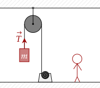
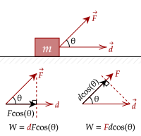

If you've ever pushed a box, you know that it is physically tiring. This is because you are doing work when you exert a force to push a box along a distance.
Here, we define energy as the "the capacity to do work". Obviously, that gives a circular definition; however, we can still make a little sense out of it. In the example above, energy from you (probably from the food you eat) is transferred to the box, allowing it to move.
Another example of a force doing work is when we use a pulley to move a box up. Here, the force of tension is doing work, moving the box up a distance.

Here, we put the pulley system onto a machine that pulls it up for us. Once the box is at the required height, we can turn the machine off. While the machine is on, it uses electricity. Once it is off, it doesn't use anymore electricity. Electricity, in the form of energy, is transferred to get the box moving up.
We can conclude here that electricity usage is only needed for pulling the box a distance up. Once it is still, there is still tension in the rope, but it doesn't do anymore work; no electricity or energy usage is needed to keep it still.
We write our working definition of work below. As noted, work is done by a force if it displaces an object. Here, we write displacement as .
One consequence of defining work like this is that if the force does not cause a displacement, it doesn't do any work. This is quite counterintuitive, but it is a caveat that we must accept.
Question 1
(HRK Q11.2) Explain why you become physically tired when you push against a wall, fail to move it, and therefore do no work on the wall.
Answer
While it is true that you do no work against the wall, your muscles still do work; they extend in order to push the box into the wall. This extension is a force that displaces your muscles, and thus does work. This is why you feel tired.
Where does this energy for contracting / extending muscles come from? It comes from the food that you eat.
Question 2
A friend is holding you and is walking at constant velocity. You tell your friend, who is clearly struggling, that they have done no work. Is your claim true? Why or why not?
Answer
If your friend is moving at constant velocity, then they are not accelerating. Thus, they do not exert a force to move you. In this regard, since there is no force acting to move you, even if you were displaced, they have done no work to you.
Note that your friend is struggling because of the answers said above; their muscles still do work in holding you and moving, so while their muscles do work, they don't do any work to move you.
Analyzing the units of work, we note that it is force times displacement. Thus, it means it is . Here, we have a special unit for work (unlike momentum) which is the Joule, symbolized with J.
This means that the Joule is equal to . It was named after James Prescott Joule, who pioneered work.
Exercise 1
You push a box a horizontal distance of 5.00m on the ground at a strength of 25.0N, parallel to the ground. How much work did you do to the box?
Answer
We substitute directly into our formula.
Let's analyze one more situation. Here, a machine is pulling a box again, but this time the tension is at an angle. Here, we assume the box stays on the ground throughout the whole motion.

In this scenario, the force is still doing work. However, it is quite inefficient. If you think about it, only the horizontal component of the tension is doing actual work. The vertical component doesn't do anything assuming the box stays flat on the ground.
This second scenario shows us that a force only does work in the direction of displacement. The vertical component of tension does no work; no displacement happens in the vertical component.

More generally, we can write the above with this expression. Given the angle between displacement and the force θ, we can compute for the work done by a force as follows.
This new term now allows us to deal with any force at any angle.
Exercise 2
(HRK E11.1a) To push a 52-kg crate across a floor, a worker applies a force of 190 N, directed 22° below the horizontal. As the crate moves 3.3 m, how much work is done on the crate by the worker?
Answer
We will directly substitute into our formula.
Exercise 3
(HRK E11.3a) To push a 25-kg crate up a 27° incline, a worker exerts a force of 120 N, parallel to the incline. As the crate slides 3.6 m, how much work is done on the crate by the worker?
Answer
Even if it is on an incline, we note that the displacement and the force lie on the same direction; thus, the angle between them is 0°.
One thing to note with the above definition for work is that work can be negative.
Question 4
What would it mean if a force does negative work? How could this be possible?
Answer
We first write out the equation for work that we have created.
If we note that force and displacement are positive, this means only the cosine term will bring it to be negative.
We note that cosine is negative if it is between 90° to 180°. This means the force points opposite the displacement. This is possible if, for example, you attempt to keep a box up an inclined plane but it only ends up sliding backward.
If we analyze the equation for work, you may notice that it is exactly the formula for the dot product between the force vector and displacement vector.
This makes sense. We have defined it such that work is done by a force if it displaces an object in the direction of the force. Thus, it is as if we project the force vector onto the displacement vector (or vice versa, as we have shown before).

This also shows another fact, which is that a force perpendicular to the displacement does no work, since we know that the dot product between perpendicular vectors is 0.
Further, if the angle between the two vectors is greater than 90°, we see that the dot product is negative. This makes sense with what we predicted above.